5.0 ScenEdit¶
FAQ: How do you determine Complexity and Difficulty ratings?
These are subjective ratings set by the scenario author:
- Difficulty: How hard the scenario is to win
- Complexity: How many units are involved and the nuances of victory conditions
FAQ: What are 'Single Unit Airfields' in the database?
Single Unit Airfields are "all in one" units. Use them for air bases that are not targets. They're preferred because fewer active units means better game speed.
To build an airbase from scratch you need: 1 runway, 1 access point/taxiway, 1 aircraft holding unit (tarmac, revetment, hangar, etc.), 1 ammo holding unit (ammo dump, revetment, pad), and 1 fuel facility (AvGas).
FAQ: Is there an upper limit to the number of units in a scenario?
The engine can handle billions of units, but more units means more calculations. Performance is also affected by complex nav paths, many long-range sensors, lots of jammers, etc.
FAQ: Why should I include 'unavailable' aircraft?
Aircraft stuck on the ground are part of the real unit complement. They take up hangar/revetment space, provide targets for the enemy, and ensure realistic availability of air facilities. Without them, your operational aircraft would have unrealistic access to resources.
FAQ: How do I add aircraft to a specific carrier in a group?
Switch to Unit View, select the individual aircraft carrier, then add aircraft. If you select a group, aircraft will be distributed among all ships in the group.
FAQ: Do I need to fill aviation magazines with drop tanks and gun ammo?
No. Drop tanks, sonobuoys, and gun ammo are in unlimited supply. You don't need to add them to magazines.
FAQ: Will my platform modifications survive a database update?
Changes to individual platforms (weapons, sensors, magazine contents) will be erased on database rebuild. Use Editor > SBR > Generate Delta Template to save changes to an .ini file. This file can be reapplied after rebuilding to restore your modifications.
FAQ: How can I show cities on the map?
Insert a facility called 'Marker (City)' and rename it as needed.
FAQ: How do I put pictures in the scenario briefing?
The simplest method is to use a web-hosted image URL. Alternatively, use a data URI - convert your image to base64 at duri.me and put the result in the href field.
FAQ: How should I name aircraft?
Use squadron/regiment name and aircraft number/tail code. Standard convention:
- USN:
VF-1 Wolfpack, NE-101(Squadron, Tail Code-Number) - USAF:
43rd TFS #05(Squadron, Generic Number) - Soviet:
611 IAP PVO, 1 Sqn #10(Regiment, Squadron, Number) - RAF:
No. 120 Sqn #04(Note 'No.' prefix)
FAQ: How many sides can I create?
Almost unlimited, but each side needs separate contact lists and allied data exchange, impacting performance. Use as few sides as possible. For neutral/civilian sides that don't shoot, set awareness to 'Blind' and uncheck 'Collective Responsibility.'
FAQ: How can I convert Google Earth placemarks to Command installations?
Use the KML-to-INST tool. See the manual for details.
FAQ: How do I fit a ship with future weapons like NSM or SLCM-N?
In the Weapons window, add 0/29, 0/32, 0/61, or 0/64 weapon records to the mounts depending on VLS cell count, then load the weapons you want.
FAQ: What is the best way to disable an airbase?
Assess airfields based on three criteria:
- Access points vs runways: If 1 runway with 3 access points, hitting access points is easier
- Aircraft parking type: Open parking is vulnerable to strikes; hangars limit blast damage; underground storage needs specialized munitions
- Ammo storage concentration: A single surface ammo depot may be the easiest high-value target
FAQ: How do I account for Daylight Saving Time?
Command uses Zulu time (UTC) primarily. Local time is displayed without DST. If DST matters for your scenario (matching local sunrise/sunset), manually enter DST start and end dates in Editor > Scenario Date and Duration.
The scenario editing mode in COMMAND is accessible by selecting either "Create New Scenario" or "Edit Scenario" from the start menu, or the "create new blank scenario" option from the file menu. Existing files can be accessed via the "Edit Scenario" choice on the main menu.
5.1 Getting Started¶
The scenario editor is the most versatile part of COMMAND. It can be used for making scenarios, with V 2.0 boasting a rewritten map engine and other "under the hood" performance improvements that make building and running monstrously large battles easier than ever. It can also be used for "editor experiments" where certain situations can be quickly set up for the sake of entertainment or curiosity.
Certain features can only be used in it, or in "ScenEdit" mode. This section will explore those features.
5.2 Scenario Walkthrough¶
To make a scenario.
5.2.1 Basic Scenario Walkthrough¶
-
Click "Create New Scenario" on the start menu. This will bring you to a blank globe screen.
-
Go to "Add/Edit Sides" on the editor menu. Then click "Add" and name the first side.
-
Go to "Unit Actions" and then click "Add Unit" on the editor menu or press the INSERT key.
-
Select the type of unit(s) to add (see 5.7.1 Add a Unit on page 101). Make sure to add airbases for air units.
-
Return to Add/Edit Sides and add additional sides, particularly the enemy side. If you do not wish for them to be playable, make sure to select the "Side Is Computer Only" button.
-
Add missions via the "Missions/Ref Points" menu (see 7.3 Reference Points on page 161). For non-playable sides, this is necessary-otherwise they will just sit there and do nothing. For playable sides, it can still be useful.
-
Once the missions are added, saving the scenario is highly encouraged.
-
A test run to see if the missions work is also strongly encouraged, reloading to the original file.
-
If everything works as intended, proceed to add scoring events (see 5.5.5 Constructing an Event on page 100)
-
Save the scenario and then test-run it to ensure the scoring events work.
- Add briefings and scenario descriptions.
5.2.2 Full Scenario Walkthrough¶
-
Create a scenario idea.
-
Perform research if necessary. The need for historical accuracy varies greatly on both the designer's preferences and type of scenario. Obviously, a detailed re-enactment of a real battle needs to be highly researched. A looser alternate history can be but does not have to.
-
Go to the editor and load an appropriate database. Depending on the time period, it's either the Cold War Database or DB3K. CWDB is WWII to 1980, DB3K is anything beyond that.
-
Create the sides of the scenario and set their postures and conditions to an appropriate setting. Not only should hostile sides be marked as such, but neutral traffic should be set to "Blind" to reduce CPU stress. (See 5.4.4 Add/Edit Sides on page 84.)
-
Decide which side the player will be. Set non-player sides to "Computer-Only"
-
Add the units and, if necessary, the missions for the player's side.
-
Add the units and missions for the opponent's side. This is necessary for a computer opponent.
-
Add the necessary events and scoring. (See 5.5 Events on page 93)
-
Playtest the scenario.
-
Complete the final checklist. (see immediately below)
-
Submit the scenario.
5.2.3 Final Checklist for Polishing¶
-
Scenario saved as a scenario file (scenarioname.scen) not a save game (savename.sav).
-
Scenario Times, duration, complexity, difficult and location/settings are set.
-
If a playable side has tons of sensors the merge range-symbols in map settings is turned on to reduce clutter.
-
Scenario description and the scenario briefings for playable sides are written.
-
Sides are added, postures, ROE and awareness are set. If side is not playable the computer only check box is checked.
-
If a side is to be playable by both the AI and a human player than all missions created for the AI have the Scrub mission if human side is human checkbox checked in the mission editor.
-
If a side is included just for environment (fishing boats, merchants) you've set their awareness level to blind to minimize unnecessary sensor calculations.
-
Units are named, and they are assigned to missions.
-
The scenario features and settings are set to what the designer intended.
-
Air bases and ships that host aircraft have populated magazines. Alternatively, the "unlimited ordnance at bases" option is set to default to on.
-
Aircraft are armed or set to reserve, so players know to add munitions. Aircraft that are not to be used are set to maintenance.
-
Boats, landing craft and UUV are added where appropriate.
-
Groups are named, and their formations are set in the formation editor.
-
All reference points are deselected you don't want selected and they are locked if you don't want players moving them.
-
No-navigation zones are added and locked where necessary.
-
Missions and exclusion zones do not share reference points. Likewise, missions and no-navigate zones do not as well.
-
All events created in the event editor have triggers and actions.
-
If added, special actions work properly and effectively.
-
If you are using points in the scenarios, you have correctly configured the scoring dialog.
-
If the game is in unit view switch it back to group view by pressing the Page up button.
-
Layers (Relief, latitude and longitude) are activated in map settings if you would like to use them.
-
God's eye view is turned off if used.
-
If you have a message displayed you've cleared them by select message log and clear for the game drop down menu.
-
The losses and expenditures report is clear. Any erroneous entries can be cleared by clicking the Reset All button.
-
The scenario elements work properly and there are no in-game problems (i.e. a missile strike that never activates not because of a bug or scenario editor flaw, but simply because its target is never spotted in time)
-
The scenario feels fun to play. A scenario that is too hard (the victory condition can only sometimes barely be met) or too easy (the player's side can effortlessly win with standoff weapons) may need reworking even if everything's gone right technically.
5.2.4 Detailed Single Scenario Walkthrough¶
This section goes into detail on the exact steps needed to make a very simple scenario.
-Click on "Create New Scenario" on the title screen or "Create New Blank Scenario" on the file menu. A blank world map should appear.
-Move and zoom the map to the area of the world you want the scenario to take place in. While COMMAND allows for intercontinental travel, a beginner should start small. This step doesn't have to be taken now, but it doesn't hurt. Let's zoom in on Mauritania.
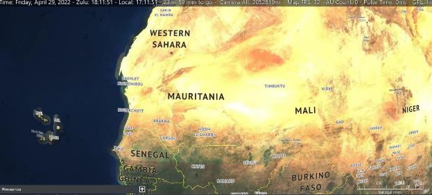
-Go to the Editor drop down menu. The first thing you should do is check the database. Since changing DBs wipes the rest of the scenario, the database should be decided on before any more work is done. There are two main databases, the DB3000 (1980+) and the CWDB (1946-1979). The DB3000 won't have World War II surplus fighters like P-38s, and the CWDB won't have advanced modern aircraft like F-22s. Here we want the DB3000, so select "use latest DB3000."
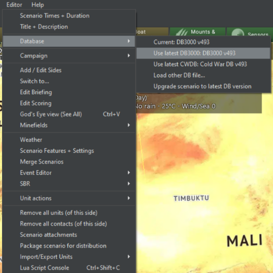
-Now add a side. This will be the player's side. We'll just call it "Blue" for now. Go to Add/Edit Sides on the editor drop down menu, click add, type "Blue", and click "OK."
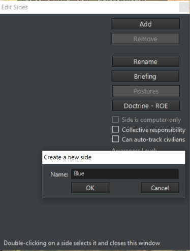
It's time to add an airbase. Fortunately, COMMAND has many prebuilt ones. Go again to the editor drop-down menu, then go to "import-export units" and "load units". Go to "main, import/export", then scroll down to "Mauritania" and expand. Check the box that says "Nouakchott IA", and then press "Load Selected Installation(s)". Then close the window after it says "completed!"

A small airfield shall now appear on the Mauritanian west coast. Click on it.
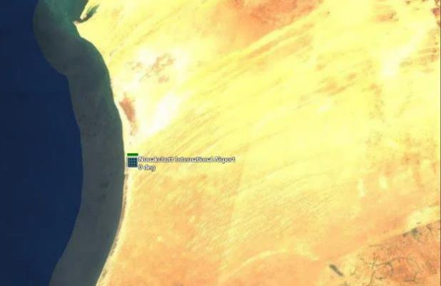
Go to either "Edit Aircraft" in the Editor drop-down menu or press the "Edit hosted aircraft" button on the right bar with the airfield selected. The edit aircraft window will appear.
Into "Class", type "F-4S".
Two types of (functionally identical) units will appear. Select the lower (Navy) one, type "Phantom" for callsign, and enter 5 into "how many". Then press "Add Selected". Five F-4S Phantom IIs should appear in the "current" tab on the left. Close the window.
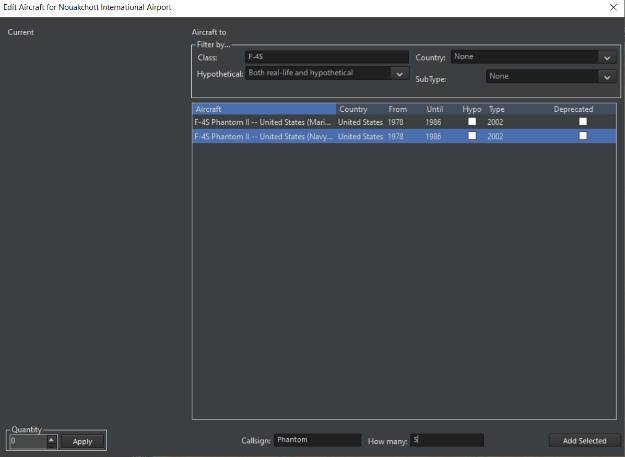
Now zoom close to the airbase. Go to either Editor Drop Down/Unit Actions/Add Unit or just press insert. The mouse cursor should change. Click on an area of land near the airbase.
Select "Facility", then in the "class" box, type in "Bar Lock". Several types of Bar Lock radar will appear. Select one and press "OK." A Bar Lock 3D air search radar station will appear at the spot. Click on the Bar Lock to select it. Note that in the Add new unit dialog, you have the ability to filter the desired units by class, subtype, country and whether the unit is real or hypothetical.

On the right bar, press "Sensors". Uncheck the "Unit Obeys EMCON" box and click the "active" box on the "Bar Lock A" option. Close the window. The radar is now emitting.
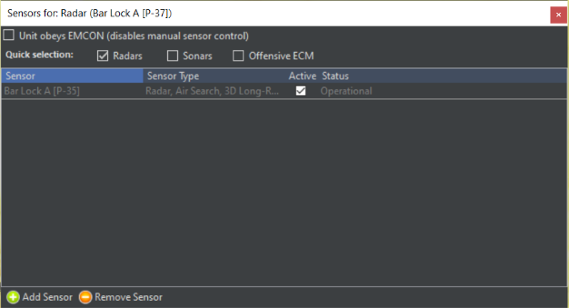
Now we need to arm the fighters. Reselect the airbase. Click on "magazines" on the right bar, then "add weapons". Add the 120 Sparrows and 48 Sidewinders (or any number, but those choices are the most convenient).

Close the windows and click on "aircraft" on the right bar. The five Phantoms are all red with "no loadout", meaning they cannot function. Select all of them, then press ready/arm. You'll notice in the air ops window that the air-to-air loadouts are functional, but the rest aren't. This is because only the air-to-air missiles are available in the magazines.
Select "A/A: AIM-7, Heavy", and press the red "ready immediately (ScenEdit) button". While in normal mode they'd need time to prepare, here they're ready instantly. Now they appear as green, meaning they're ready to go.
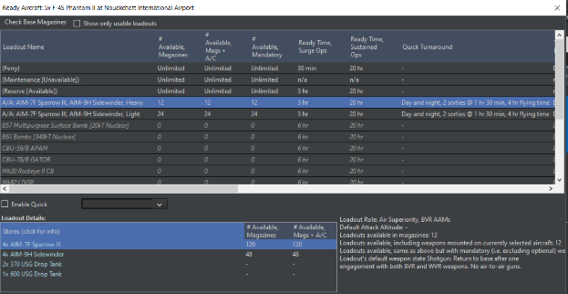
All right, one side is up. It has a radar station for spotting and aircraft capable of intercepting. Now for the other.
Go to Add/Edit Sides again, then add a side called "Red". Before closing the window, make sure to check the "side is computer-only" box. Now go to "Switch To" and select Red.
The map is now blank again. Go to add unit/insert, click on a spot near the northern Mauritania/Western Sahara border, and type in "Single-Unit Airfield". Select one with a long runway and press OK. It should appear.
Now press the play button for a few seconds and then pause the simulation again. Two green symbols-the Nouakchott airbase and Bar Lock, should appear. Green means neutral, and we want these to be hostile. Go back to add/edit sides. Click on Blue, go to Postures, and then select Hostile. Do the same for Red. They should now appear as red on the map.
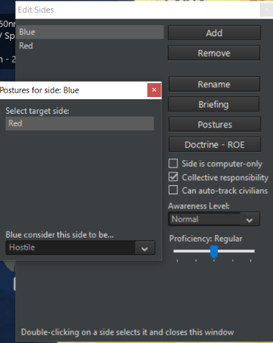
Select the airfield (making sure you're controlling Red) and then click "edit hosted aircraft" on the right bar. Type in C-130A and select one of the two C-130As (NOT the AC-130A on the top). Write "Target" under callsign and add two.
Go to "planes" and ready/arm again. Select Ferry and ready immediately. There's no need for filling the magazines in this case.
They need missions to function. Using CRTL-right click or CRTL-Ins, put two reference points near, but not too near, the blue airbase. Make sure they're selected.

Now go to the missions/reference points drop down menu and add mission. Make it a support mission.
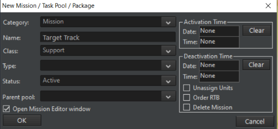
Select both C-130s and add them to the mission, then uncheck the 1/3rd rule.
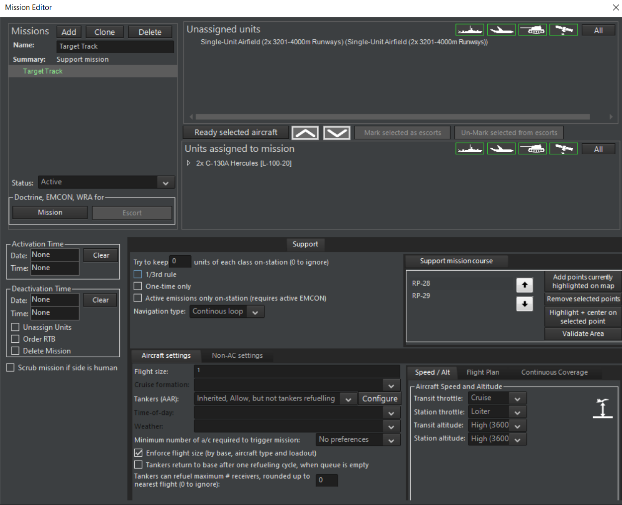
Now save the game. If loaded in normal play, the scenario now functions-the C-130s will take off on their own. But now it's time to make it meaningful.
Switch to Blue or exit and reopen the scenario (it will load as Blue by default, as Red is checked to computer-only). Go to Editor-Dropdown/Edit Scoring. Set the Triumph score to 150. Close the window.
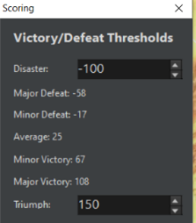
Now go to Editor/Event Editor/Triggers. Select a "create new trigger, unit is destroyed." Type in C-130 Shot Down. Select Target Side Red, Target Type Aircraft, Target Subtype Transport, Target Class C-130A Hercules. Press OK.

Now Editor/Event Editor/Actions. You want two actions this time. Select "Create New Action" with "Points", and then Side: Blue, Point Change 500, with Blue Points in the description. Press OK. Then select Create New Action with "End Scenario". Press OK in the now limited action editor window.
Close the window, now go to Event Editor/Events.
Check the Event is Repeatable Tab, Type in C-130 Hit for "description", then add C-130 Shot Down for trigger and "Blue Points" and "End The Scenario" for Action. Press OK. Save the scenario.

By this point, the internal mechanics of the scenario are complete. All that's left is touching it up.
At the very top of the editor drop down menu is "scenario times-duration". Make sure the "scenario current time" and "scenario start time" are the same, set the "complexity" to 2 (for the sake of the exercise) and put "Mauritania" as the location. Then press OK.
Now go to editor menu- "Title/description". This has probably already come up as part of the initial save of the scenario. In the description box, write "Defend southern Mauritania from unknown red contacts. This is an editor test."
Then press OK.
Now go to "Edit Briefing", and type in the sentence. "Investigate and Engage incoming air contacts." Press OK. Most scenarios need and have a longer briefing, but this works for now.
Save the scenario again and return to the title screen.
At the title screen, go to "start new game", and select the scenario in question. The scenario will appear as having Mauritania as the location, a higher complexity and difficulty score, and the scenario description of "Defend southern Mauritania from unknown red contacts. This is an editor test."
The only option is to play as Blue, and you will see the Blue "Investigate and Engage incoming air contacts" briefing. Enter the scenario and run it for a bit. Two air contacts should appear, detected by the Bar Lock.
Using either an intercept mission, patrol mission, or manual engagement, send the Phantoms up to engage the contacts. They will be shot down. Once one C-130 is downed, if all has gone right, a popup saying "The scenario has concluded. You will now be presented with the evaluation of your performance." will appear. Press OK. Another window should appear, saying Triumph: Final Score 500" (or 1000 if both planes were quickly downed). You've won!
A complete scenario has now been made and played.
5.3 Lua¶
5.3.1 Lua Scripting¶
Lua is a programming language that Command uses for advanced scripting. It is extremely versatile and can provide many bonuses. Even at their simplest, Lua scripts can add much versatility beyond the limits of what the internal event editor alone can provide.
The Basics:
Lua can be used to:
-
Spawn, as opposed to teleport, units into the map during a scenario.
-
Change the weather mid-scenario.
-
Reassign units to different missions.
-
Change side postures and doctrine.
-
Add elements of chance so that the scenario is never the same way twice.
-
Make scenarios detailed and varied.
Thus, Lua can be used for creating a basic scenario where the player starts with a random variety of units. It is here that a basic walkthrough will be conducted.
In either a subset of "event actions" or a "Lua script console" in the event editor, there's a Lua menu. A basic set of "recipes" are there, see "Command Lua API" at https://commandlua.github.io/ for explanations. One such recipe is ScenEdit_AddUnit (Table). When filled in, it looks like this:
ScenEdit_AddUnit({type='Sub', side='USSR', name='B-23', dbid='187', latitude='49.3812997111192', longitude='-36.8903957715054'})
This, if run with a side marked "USSR" in a DB3K database, will generate a Foxtrot-class submarine named B-23 in the middle of the North Atlantic.
NOTE: Lua can be very finicky, and a single character in the wrong spot can mess up a script. Also, be aware that values carry over across scenarios, so do not assume they will be the default ones.
That example is using Lua to duplicate something that can be accomplished with the traditional interface. The same task could be accomplished via finding the spot in the Atlantic and using the unit editor. A more complex task is to include one of three very different submarines.
a = math.random(1,3) if a == 1 then ScenEdit_AddUnit({type='Sub', side='USSR',name='B-10', dbid='287', latitude='50.52351341355', longitude='-37.177899984719'}) elseif a == 2 then ScenEdit_AddUnit({type='Sub', side='USSR',name='B-15', dbid='278', latitude='50.52351341355', longitude='-37.177899984719'}) elseif a == 3 then ScenEdit_AddUnit({type='Sub', side='USSR',name='K-115', dbid='391', latitude='50.52351341355', longitude='-37.177899984719'}) end
Here there is an even chance of one of the following three submarines being spawned.
B-10, a Whiskey (one of the earliest and least capable diesel subs)
B-15, a Juliett (a 1960s diesel submarine that still has long-range anti-ship missiles)
K-115, a Charlie II (a nuclear submarine with advanced Bazalt/Sandbox-style anti-ship missiles)
Tying this script to an event that is triggered after the scenario is loaded (see 5.5 Events on page 93) is the next step. Once a player (with the "USSR" being a playable side) runs the scenario in non-ScenEdit mode long enough to trigger the event, they will receive one of the three submarines.
For a non-playable side, patrol orders need to be bundled-in for any mobile unit. For example:
ScenEdit_AddUnit({type='Sub', side='USSR',name='B-24', dbid='287', latitude='51.52351341355', longitude='-38.177899984719'}) ScenEdit_AssignUnitToMission('B-24', 'eastpatrol')
Creating two different (and possibly) empty missions in the scenario editor, having the USSR be a non-playable side, and using a math.random script as follows:
a = math.random(1,2) if a == 1 then ScenEdit_AddUnit({type='Sub', side='USSR',name='B-24', dbid='287', latitude='51.52351341355', longitude='-38.177899984719'}) ScenEdit_AssignUnitToMission('B-24', 'eastpatrol') elseif a == 2 then ScenEdit_AddUnit({type='Sub', side='USSR',name='B-24', dbid='287', latitude='51.52351341355', longitude='-38.177899984719'}) ScenEdit_AssignUnitToMission('B-24', 'westpatrol') end
..means that once the event is triggered, a Whiskey submarine will spawn in the same spot and conduct a mission in one of two areas. This sort of Lua randomization is useful for increasing the variability and replayability of scenarios.
Lua can do more than just set up scenarios. It can also make them more dynamic.
One Lua action is using the previously mentioned ScenEdit_AssignUnitToMission to either assign or change missions for units that already exist. Simple random selection can make the following units assigned to one of three possibilities.
a = math.random(1,10) if a\<5 then ScenEdit_AssignUnitToMission('Ukrainian Flanker #1', 'NONE') ScenEdit_AssignUnitToMission('Ukrainian Flanker #2', 'NONE') ScenEdit_AssignUnitToMission('Ukrainian Flanker #3', 'NONE') ScenEdit_AssignUnitToMission('Ukrainian Flanker #4', 'NONE') ScenEdit_AssignUnitToMission('Ukrainian Flanker #5', 'NONE') ScenEdit_AssignUnitToMission('Ukrainian Flanker #6', 'NONE') elseif a>=5 and a\<8 then ScenEdit_AssignUnitToMission('Ukrainian Flanker #1', 'Close Patrol') ScenEdit_AssignUnitToMission('Ukrainian Flanker #2', 'Close Patrol') ScenEdit_AssignUnitToMission('Ukrainian Flanker #3', 'Close Patrol') ScenEdit_AssignUnitToMission('Ukrainian Flanker #4', 'Close Patrol') ScenEdit_AssignUnitToMission('Ukrainian Flanker #5', 'Close Patrol') ScenEdit_AssignUnitToMission('Ukrainian Flanker #6', 'Close Patrol') elseif a>=8 then ScenEdit_AssignUnitToMission('Ukrainian Flanker #1', 'Aggressive Patrol') ScenEdit_AssignUnitToMission('Ukrainian Flanker #2', 'Aggressive Patrol') ScenEdit_AssignUnitToMission('Ukrainian Flanker #3', 'Aggressive Patrol') ScenEdit_AssignUnitToMission('Ukrainian Flanker #4', 'Aggressive Patrol') ScenEdit_AssignUnitToMission('Ukrainian Flanker #5', 'Aggressive Patrol') ScenEdit_AssignUnitToMission('Ukrainian Flanker #6', 'Aggressive Patrol') end
Depending on the roll, the six Su-27s will either stay grounded (NONE-assigned to no mission), launch but only stay near their air bases (assigned to the "Close Patrol" mission), or launch in a mission with a large prosecution area, making them more eager to fight (assigned to the "Aggressive Patrol" mission).
Another is changing sensor statuses to active or passive via ScenEdit_SetEMCON. The template is as follows:
ScenEdit_SetEMCON('EMCONSubjectType', 'EMCONSubjectNameOrID', 'EMCONSettings')
SubjectType can be a unit, group, mission, or side.
For a single unit it could be:
ScenEdit_SetEMCON('Unit', 'USS McCracken', 'Radar=Passive')
This turns off the radars on a unit called the USS McCracken.
Whereas for an entire side it could be:
ScenEdit_SetEMCON('Side', 'USSR', 'Sonar=Active;Radar=Passive')
This turns off the radars but turns on the active sonars for every "USSR" unit.
This can be combined with triggers (see 5.5.3 Triggers on page 97) to enhance scenarios in the following ways:
-Combined with time-related triggers to symbolize intermittent emissions. A unit doesn't have to go to the extremes of either always or never using the active sensors.
-Combined with detection-related triggers to symbolize a unit commander going "Ok, the cat's out of the bag, better emit for the sake of awareness" without needing to be explicitly under attack.
-Combined with special actions to symbolize a general order, particularly if it's on an allied side the player otherwise doesn't directly control.
Still another Lua capability is changing the weather. The ScenEdit_SetWeather function has four inputs: temperature (increments of 0 to 50 degrees Celsius), rainfall (increments of 0 to 50), clouds (increments of 0.1 to 1), and sea state (increments of 0 to 9).
So, in basic terms, running the following SetWeather action-
ScenEdit_SetWeather((35),(12),(0.6),(4))
...will lead to a base temperature of 35 degrees Celsius (95 degrees Fahrenheit), moderate high clouds and rain, and a sea state of 4 (wind 11-16 knots, small waves).
Lua is capable of much more than these major examples. It can even create a type of "AI" if the programmer is skilled enough.
If in doubt about anything, or if one simply wants to learn more, ask online in the "Lua Legion" subforum at http://www.matrixgames.com/forums/tt.asp?forumid=1681.
5.4 Editor Drop-Down Menu¶
The editor drop-down menu only appears in ScenEdit mode and contains the scenario creation functions.
5.4.1 Scenario Times + Duration¶
This drop down allows you to set the current scenario time, the scenario start time, scenario duration, complexity, difficulty and location. The exact date of the scenario will change everything from national borders to the location of polar ice.
Scenario Current Time: Sets the current scenario time.
-
Enter a date by either selecting and manipulating the individual elements of the date field (day name, Month, Day, Year) or clicking the calendar icon which will launch a small calendar dialog that can be used to choose a date.
-
Enter a time by manually manipulating the hour, minute and second fields or typing them in.
Scenario starts on: Sets the time the scenario starts on.
-
Enter a date by either selecting and manipulating the individual elements of the date field (day name, Month, Day, Year) or clicking the calendar icon which will launch a small calendar dialog that can be used to choose a date.
-
Enter a time by manually manipulating the hour, minute and second fields or typing them in.
Scenario Duration (And lasts for) Field: Enter a numeric value in the days, hours, mins (minutes) fields to set this. This can be changed after playtesting if one feels the scenario is too short or too long for its own good.
Complexity: Allows editors to set a scenario complexity using a 1 to 5 scale. This will be reflected by the Complexity green bar scale in the load scenario dialog. Complexity is inherently arbitrary and up to the scenario creator, but a general rule of thumb is that scenarios with more units and/or a situation that requires more setup, such as aerial refueling or coordinated time-on-target strikes, should have a higher complexity level.
Difficulty: Allows editor to set a scenario difficulty using a 1 to 5 scale. This will be reflected by the Difficulty green bar scale in the load scenario dialog. Like complexity, difficulty is inherently arbitrary and up to the scenario creator. Scenarios should be play tested to see the 'true' difficulty before a final score is assigned. However, a scenario where the win condition can be consistently achieved should get a low ranking, and one where it cannot easily be accomplished, even by the scenario creator, should be the opposite.
Location: Allows editor to fill in a text value noting location that will be displayed in the location field of the load scenario dialog. The location can be anything from geographical locations (I.e. GIUK Gap, East China Sea) to conflicts (Persian Gulf War, Indo-Pakistan War).
Title + Description: This dialog allows editors to add the scenario Title and descriptive text that appears in the Load Scenario Dialog.
Title Field: Enter a text value to give the scenario a title. It will appear in the load scenario dialog under title.
Description: This field allows editors to add text, pictures and links to the scenario description that appears in the load scenario dialog It. It is copy and paste capable and includes most common Windows text edit functions.
To add text: Type and edit using the appropriate buttons. You can highlight over existing text and use the function buttons to make edits.
Pictures: Add pictures as needed.
Links: Add links to background materials, etc. as needed.
5.4.2 Database¶
Current: This displays the current database in use by the scenario.
Use Latest DB3000: This updates the database to the latest version of the DB3000, covering 1980 to the ever shifting "near future". NOTE: Changing the DB in this fashion will delete all sides, so it's important for scenario designers to choose a DB before adding sides and units.
Use Latest CWDB: This updates the database to the latest version of the CWDB, covering 1946 to 1979.
Load Other DB File: This allows a database file to be manually loaded.
Upgrade Scenario To Latest DB Version: This allows an existing scenario to be updated to the latest version of its respective database without losing any units. It can be accomplished as either a "shallow" or "deep" rebuild, or used to update multiple scenarios. See 8.1 Scenarios vs. Databases on page 187.
5.4.3 Campaigns¶
This allows for the creation of campaigns of linked scenarios.
In it, the player can attach scenarios, attach attachments, and set a pass score to enable progress to the next mission in campaign play.
· Use "Add scenario" to select an individual scenario for part of the campaign. Likewise, "Add attachment" adds a scenario attachment.
. "Remove selected" is self-explanatory and removes the selected element.
. "Move Up/Down" changes the position of the selected element, useful for changing the order of scenarios.
· At the bottom of the campaign dialog, enter an appropriate pass score (what score the player needs to obtain in order to reach the next scenario) in the dialog box and press "set". It will change the score for the selected scenario.
· "Title and Description" describes the beginning of the campaign, what players will see at the menu screen.
· "Ending Text" describes the ending of the campaign, what players will see after they've beaten it.
· "Save Campaign" saves the current campaign.
Create New: This opens up a blank campaign editor window where scenarios (not necessarily the currently loaded one) can be added.
Load From File: This loads a previously existing campaign for editing. Scenarios and attachments can be added or removed, the order and pass score can be changed, and so can the opening and ending text.
5.4.4 Add/Edit Sides¶
This function allows you to add sides to a game and edit their properties. Sides may be human, or computer controlled. A side's relationship with other sides is determined by its posture. Each side also has its doctrine which is part of the mechanism that governs its behavior.
-
Add: Click "Add" and type a name for the side in the box that opens. A new side will be added to the scenario
-
Remove: Select a side and click "Remove". This deletes all units and missions for that side.
-
Rename: Select a side and click "Rename", Type in a new name in the box that opens. The side will be renamed.
Briefing: This opens a window to edit the briefing of the selected side.
Postures: This determines how each side interacts with other sides. The choices are Neutral, Friendly, Unfriendly, and Hostile. Select the side, then click "Postures", in the box that opens, select the desired posture from the drop-down menu. Posture choices:
-
Friendly: Sides will not fire on each other and share contact information and air facilities.
-
Neutral: Sides will not fire on each other and do not share sensor information.
-
Unfriendly: Sides will not fire each other but will intercept when on patrol missions. They can conduct electronic warfare against each other.
-
Hostile: Sides will fire on each other and can conduct electronic warfare against each other.
Doctrine--RoE button: This sets the default Doctrine, RoE, and EMCON for a side. All existing and Lua-spawned units will inherit these settings unless changed by a mission, script, or manual selection. The editor can set these to be editable by players in game mode by checking off the Player Editable checkboxes.
Side is Computer-Only: If checked, this makes the side inaccessible to the player in normal play. This is typically used to designate the OPFOR side in a scenario and means that missions and tasks will have to be set for it before the scenario can be playable outside of ScenEdit.
Collective Responsibility: If checked the actions of one unit in a side will be treated as reflecting the entire side. If unchecked, it will not be. For example, with CR checked a unit from Side A being marked as hostile will cause all of Side A to be marked the same way, while designating that unit with CR unchecked will just change only that one unit.
Can Auto-Track Civilians: If checked, civilian and commercial units will automatically appear as visible to the side regardless of its awareness settings.
Awareness: This sets the side's level of awareness of the units in the scenario. Note that any unit may be set to be automatically detected and classified by the scenario author, regardless of this setting.
-
Normal: All units must be detected and classified using suitable sensors.
-
Auto Side ID: All units must be detected but the side identified upon detection.
-
Auto Side and Unit ID: All units must be detected but the unit's side and unit type is provided upon detection.
-
Omniscient: Similar to "God Mode" which reveals everything detectable.
-
Blind: Nothing is revealed.
Proficiency Settings: This sets the default proficiency for a side. There are five proficiency levels ranging from 'Novice' to 'Ace', with 'Regular' as the default norm. The proficiency levels most visibly affect aircraft agility, with novice aircraft having only 30% of their nominal capability, veterans being able to equal the on-paper level exactly, and aces capable of even exceeding it.
In addition to aircraft agility, proficiency also affects damage control, ability to fly at low altitudes without advanced avionics, ability to withstand g-forces during hard maneuvers, reaction time (extremely useful for engaging fast moving aircraft or missiles), and the accuracy of unguided weapons.
Proficiency is inherently subjective and up to the player. There is no locking the player into select proficiencies for select countries. However, some possible guidelines are:
-
"Regular" as the default and as a backup in case all else fails or a suitable choice cannot be found by the scenario author.
-
"Cadet" as a nation with a poor historical record and/or a unit new to battle. "Novice" as an even more extreme version of "Cadet".
-
"Veteran" as a nation/unit with decisive combat experience and/or excellent training. "Ace" likewise as a similarly extreme side in relation to "Veteran" in the opposite way as "novice" is to "cadet".
Individual unit proficiency can be changed from the side norm via either the right-click on unit dialogue (see 4.1.5 Scenario Editor: on page 54) under "scenario editor" or in the order of battle menu (see 6.3.3 Order of Battle on page 115).
Historical note: The unit proficiency symbolizes the disconnect between tactical and operational skill. Proficiency can swing marginal fights one way or another but is (generally) less important when one side or unit has a clear supremacy. Often, putting assets in the right place at the right time is more important than the exact performance of those assets.
Side Enablers:
Modern warfare is not "WW2 but with better weapons", and the comforts of post-Cold War COIN & intervention / regime-change ops are no longer to be taken for granted. The GPS navigation systems guiding modern platforms and weapons will likely be disrupted (in fact count yourself lucky if the satellite constellation above you survives), and the BLOS comms that forces rely upon for everything from cell-phone connectivity to drone control may or may not be available, theater-wide or locally.
Side Enabler Function
A key side-related feature of Command is the concept and framework of "Side Enablers" (aka "theater access options"): Capabilities that act as force multipliers, enabling options for action -- or taking them off the table if they become unavailable.
The most common enabler is access to satellite-based navigation, particularly with regards to weapon guidance (and more recently, autonomous operation of drones). GPS is of course the most commonly referred example, but GLONASS (Russia), BeiDou (China) and NavIC (India) are also other options.
These enablers are available for configuration in Command when editing the properties of Sides in the Scenario Editor:
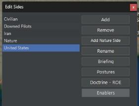
Clicking the "Enablers" button brings up the available enablers for the selected side:

Checking or unchecking each checkbox enables or disables this capability for the selected side.
Apart from the top Side-level, these enabler items are also configurable on a local basis. The idea here is that in many cases the ability (or lack thereof) to use a certain functionality may be restricted geographically; Starlink's "no Ukraine" geofencing for its LEO-BLOS comms service is a recent example, but another common case may be the localized jamming/spoofing of GPS on a town or frontline of interest. The reverse may also be true: A given service may be generally unavailable theater-wide but available on a specific area (local beacons for both PNT/GNSS and comms are rapidly proliferating; you can now fit some of them even on artillery shells).
The way we model area-specific availability is through the area & reference-points manager:

By selecting a zone and clicking on the new "Enablers" button, we get access to the same menu of enabler options as on the side level. Embedding this ability on zones also allows taking advantage of all the nice properties already present in them, such as anchoring them on units, contacts or reference points.
Given that the (non)availability of these services can be highly dependent on events happening during the sim execution (or player decisions), it makes sense that the enablers themselves are configurable also through Lua scripting. Here is an example of fetching the enablers for a given zone and modifying them:
local s = VP_GetSide({name='side-A'}) print(s) local z = s.standardzones local myz = s:getstandardzone(z[1].guid) print(myz.enablers) myz.enablers = {GNSS_GLONASS = true, GNSS_GPS = false} print(myz.enablers)
GNSS disruption implementation in Command
The first concrete implementation of the enabler's framework is, to no-one's surprise, GNSS disruption. This is a large topic of discussion in western defence circles as an acknowledged vulnerability, given that so many different weapon systems since Desert Storm have come to rely on GPS navigation for guidance -- and this trend has been also subsequently replicated in Russia, China & India (to our knowledge, the pan-European Galileo system has not yet been adopted as a guidance component on any fielded weapon system).
GNSS disruption (in the form or jamming, spoofing or complete denial of service) is a huge and highly technical subject, but in the context of terminal weapons guidance its effects are fairly simple: It significantly increases the CEP figure of anti-surface weapons, thus significantly degrading their accuracy. Such weapons typically rely on an internal inertial navigation system (INS) which acts as the primary navigation reference, with the GNSS providing a regular correction to the INS's inevitable drift. If GNSS is denied, the weapon has to rely entirely on its INS for terminal guidance.
When a weapon is denied a GNSS update, a "NOGNSS" warning is shown next to the weapon icon on the map, to indicate that this weapon is suffering from such degradation:

When the weapon's impact is evaluated, the INS drift due to GNSS denial is taken into account and may significantly raise the final CEP value used in the impact evaluation. This is presented in the message log, as in this example:
> 8/4/2017 10:08:14 -- Weapon: GBU-39/B SDB #993 has been without a GNSS update for 6 min 49 sec. Weapon has INS: 1990s+ tactical weapon INS. Max drift: 105m. Actual drift (CEP increase): 79m
Notice in this example the significant difference between max and actual drift: The max drift represents the maximum deviation from the DMPI if one assumes that all drift perturbations will cumulatively swing the weapon away from the aimpoint. A more (statistically) likely case is that the actual deviation will be somewhere between zero and max; in this case 79 meters.
There is a popular misconception on public discourse, that GNSS disruption can instantly turn a weapon useless. This is a gross exaggeration. The actual effect of such degradation on a weapon's impact accuracy, and to its overall effectiveness, will strongly depend on the inherent accuracy of the weapon's INS system, the time the weapon spends in a degraded state (INS drifts with time, not distance covered), the weapon's warhead type and yield, as well as the type and physical dimensions of the aimed target.
Some recent examples illustrating this:
-
According to persistent reports, ground-launched SDB (GLSDB) bombs have been ineffective in the Ukraine theater due to extensive GPS jamming/spoofing. This makes sense for a weapon like SDB, whose penetrator-explosive warhead is highly dependent on high accuracy (a near-miss does not produce any proximity damage; it's direct-hit or bust); combined with an increased flight time (i.e. more time to be exposed to GNSS disruption, depending on the reach of enemy EM activity) this creates ample opportunity to disrupt the weapon sufficiently to make it a clean miss.
-
On the same theater, GMLRS guided rockets have reportedly been highly successful despite facing the very same jamming activity against them. Why? The warheads of these rockets are area weapons (they disperse bomblets) so a near miss usually is as good as a spot-on direct hit. Additionally, their small flight time reduces the opportunity for significant jamming and thus diversion. (Reportedly air-launched SDBs, the very same type as ground-launched by GLSDB, have also been a popular weapon. Why? Presumably the shorter flight time compared to the ground-launched variant makes for a sharply reduced window of GNSS-jamming vulnerability.)
-
High-velocity weapons in general have an inherent advantage in such conditions because of the time-based drift on INS systems. This is an additional reason that high-speed systems (incl. hypersonics) are a popular avenue for research and development.
Note #1: The current GNSS disruption model applies only to weapons that use INS+GNSS for terminal guidance (JDAM being the prime example), and NOT to weapons that combine INS+GNSS for mid-course guidance with homing sensors for terminal guidance (e.g. most modern cruise missiles). There are a number of reasons for this, incl. the complexity of representing "actual" vs "perceived" weapon position (cue the "missile knows where it is" memes...), as well as the fact that such systems use terminal homing precisely in order to compensate for mid-course guidance errors and thus are less susceptible to GNSS disruption.
Note #2: Currently there is no distinct field in the database to mark the INS performance level of each individual weapon. For this reason, a simple "deduction" algorithm is used, based on the weapon properties:
-
If the weapon is a guided gun round (e.g. Excalibur) or rocket (e.g. GMLRS), assume it uses MEMS-based INS (Assumed drift: 5nm / hr.).
-
Otherwise, if the weapon's maximum range is under 162NM, assume it uses a "1990s+ tactical weapon"-grade INS (Assumed drift: 0.5 nm / hr.)
-
Otherwise for longer-range weapons, assume it uses a "1990s+ high-grade" INS (AIRS etc.) (Assumed drift: 0.05 nm / hr.)
The 162NM (300km) threshold is based on the MCTR regime rules, which treat missile weapons with a >300km range as "strategic".
Switch To: This drop-down allows you to switch the view perspective in the editor to each side you have created.
5.4.5 Edit Briefing¶
This function calls the edit briefing dialog which allows players to add text, pictures and links to the side briefings that appear for each side in the load scenario dialog and briefings dialog. You must switch sides using the editor switch to function to edit and add unique briefings for each side.
Briefings can be either formal with the style of an actual military document such as the traditional American "five paragraph order", or informal. Whatever the format, they should include:
-
The units under the player's control.
-
A less detailed description of units under enemy control (remember the fog of war).
-
The objective and rules of the scenario.
The briefings should be able to lay out the basic guidelines for the scenario player, so that they do not have to wander around confused wondering what to do (if the objective is to hit a set of fuel tanks, the player shouldn't waste time attacking air defense sites if they have limited resources, thus the briefing should mention that)
5.4.6 Edit Scoring Dialog¶
This dialog allows editors to apply scoring evaluation to their scenarios that appears in the victory conditions dialog. Points can be scored or lost in the game by using the scoring event in the event editor. This dialog is then used to evaluate that scoring.
To use:
-
Make sure the side you'd like to apply scoring to is selected in the Switch To dialog.
-
When the scoring dialog is open, enter high and low values in the Triumph and Disaster fields. Be aware that a campaign (see 5.4.3 Campaigns on page 83) will require reaching the set pass score to progress to the next scenario in it.
-
Make sure the numbers match the point total in the scoring events.
Note: Scoring overall is a hugely tricky situation. In many scenarios, a simple give and take of "destroy enemy units, gain points, lose friendly units, lose points" works fine.
But for others, this isn't suitable. If the goal is to hit a certain high value target, that should take precedence over just trading blows. In extreme cases, hitting the target(s) alone can be the difference between success and failure. Hit it, get a triumph, lose it, get a disaster.
The scoring system thankfully allows for more nuance between the two extremes. Something like 1,000 points for hitting the target, -100 points for losing an aircraft, and 750 points being the line between minor victory and average allows for a bit of slack. Lose two aircraft, and the tradeoff for hitting the target is judged by the scenario designer to be worth it. Lose three and it's a little too much. Miss the target and it's an automatic failure.
The relative value of units should be considered by the scenario author. If the units are supposed to be expendable, then there should be little to no penalty for their losses. Likewise, an irreplaceable unit can justifiably result in an automatic loss for the entire scenario. The time period can be considered for losses of line units-if the side in question has plenty of aircraft to spare, a wave of replacements, and a politically high tolerance for casualties, accomplishing the objective beats taking losses. The reverse is also true.
Scoring can also be determined for pure gameplay reasons, even if it's not "historically accurate" per se. If the way to balance a scenario is to make one side's losses or kills worth a lopsided amount, that's a perfectly valid reason.
5.4.7 God's Eye View¶
Provides an omniscient view of all units on all sides in the game.
· This setting is useful for editors to see what is really going on while testing a scenario. Shifting from it to normal player views is used to provide an excellent contrast.
· This setting also allows editors to create strike missions for targets that have not been detected but still need to be specified.
· Keep in mind that this does not reflect what each player side sees at any time as they see things through often imprecise sensors.
Minefields: This drop-down menu allows editors to add and remove sea minefields.
To add and mines to a designated area:
-
Make sure you have switched to the side you would like to deploy the mines.
-
Create and then select the reference points you would like to you use to define the area you'd like the mines to be placed.
-
Select Create minefield in designated area which launches the "add mines in designated area" dialog.
-
Choose the type you would like and how many (holding down the shift, control, or both keys while will clicking will add more). Please consider the depth of the water and the depth parameters the mines can operate in prior to deploying. These are found in brackets after their name in the dialog. The different types of mines vary extensively in terms of both damage and sweepability, from basic moored contact mines to lethal rising mines.
-
When ready to add press the ADD button. The mines will be randomly distributed based on area and water depth.
To remove mines from a designated area:
-
Select the reference points or drop and select new reference points marking the area you'd like to remove mines from. Make sure that it covers the entire minefield.
-
Select remove mines from designated area in the Minefields drop down menu.
5.4.8 Weather¶
This function allows editors to manipulate weather and sea conditions.
Use this menu to manipulate weather conditions in the game. Simply slide the scales to manipulate average temperature, rainfall, sky (visibility) and wind/sea state conditions. These can be global or localized (7.3 Reference Points on page 161
How weather impacts units in the game:
Temperature affects several sensors but primarily infrared ones. During the night, man-made and mechanical objects stand out more clearly against the background on infrared sensors. Conversely, during daytime (and particularly in hot climates) IR sensor range shrinks dramatically. Imaging sensors are less severely affected than older ones. Temperature differs from the "average" setting depending on region of the world-the equator is a lot warmer than the Arctic, obviously.
Rainfall affects both visual, IR and laser sensors. Visibility can shrink to as much as 1-5% of original range and similarly IR sensors are severely degraded by even light rain (e.g. in a rainstorm a Sidewinder may have an effective lock-on distance smaller than gun range).
Cloud coverage affects line-of-sight for visual and IR sensors. Light cloud coverage usually means scattered clouds at high altitude; aircraft can get under the cloud base and still visually acquire targets below, illuminate for LGBs etc. Thick cloud coverage means thick clouds at all altitudes; LGB guidance may be difficult or impossible unless the aircraft descends to low altitude, and spotting is likewise degraded.
Sea states affect primarily ship suitability (not currently modelled) and sonar performance. Surface ducting is useless in high waves and sonar ranges at or near the surface are severely degraded. High waves also raise the minimum safe altitude for low-flying aircraft. Sea state also affects the accuracy of naval gunfire, especially on lighter, more easily tossed vessels.
5.4.9 Scenario Features + Settings¶
This dialog allows editors to set default realism settings for scenarios. Some features are locked and require owning a certain DLC to unlock.

To select a setting just select a checkbox and click the apply button.
Detailed Gun Fire Control: When activated, guns have their Ph and CEP values realistically affected by the quality of their fire-control director and may altogether be incapable of firing if their sensors are blocked or knocked out. When disabled, guns can fire even without any director guiding them, and their accuracy is unaffected by sensor and weather limitations.
Unlimited magazines at air/naval bases: When activated, aircraft and ships now have unlimited ordnance at any port or airfield they deploy in. With this enabled, even if the magazine has one or zero specific missiles, a squadron of ten aircraft can all be deployed with a loadout of said missiles.
Aircraft Damage: When activated, aircraft are not immediately destroyed by any successful hit. Their survivability is highly dependent on both the weapon (light AAA is far weaker than a precise heavy SAM, and a modern fuze is better at inflicting damage than an older one) and the aircraft (Larger, multi-engine and/or more heavily armored aircraft are harder to destroy). A damaged aircraft that successfully returns to base will be down for repairs and thus take longer to ready than an undamaged one-often longer than the current length of the scenario.
When disabled, aircraft are destroyed in one hit by anything.
Realistic Submarine Communications: When activated, submarines diving below periscope depth will go out of contact with the player (see 12.6 Comms Disruption & Cyber Attacks on page 291). They can be returned by right clicking on the ghosted "last known location" icon and selecting "summon to reestablish comms."
An ELF signal amounting to "Ok, you'd better come up now" is sent, and, if the coast is clear with no immediate threats, the submarine returns to antenna depth, sharing any contact information it gained while deeply submerged.
Effects Of Terrain Type: When activated, this allows for different terrain types to have their effect on unit movement, visibility, and resistance to blast effects (see 3.1.1 The Globe Display on page 12 for details). When deactivated, all types of terrain are treated similarly.
Effects of Terrain Type -- ADVANCED: This option enables the effect of the skyline of the local terrain as well as the height of the mast of a unit to affect visibility. With this enabled, many older scenarios may be broken if the terrain wasn't carefully checked prior to placement of units. Think of it terms of standing in the middle of a lot of skyscrapers with a pair of binoculars trying to see 'through' the buildings.
Communications Disruption: Enables comms disruption. See 12.6 Comms Disruption & Cyber Attacks on page 291.
Weather Affects Ship Speed: When activated, bad weather will slow ships down and, in some cases, even trap them in a near-stationary "heave". Unsurprisingly, small ships are far more vulnerable to bad weather than large ones.
Allow instant loading for landing planner: This option allows for instant loading of units into vehicles when using the loading planner.
Weather and day/night affect aircraft sorties: Aircraft that are not suitably equipped (either built-in or through their loadout, e.g. LANTIRN pods) for flying at night or in bad weather, will not be able to take off. If such aircraft are already airborne when unsuitable conditions occur, they run a high risk of crashing on landing. This feature can easily break older scenarios, so be careful when and how it is employed.
5.4.10 Merge Scenario¶
This fuses two scenarios into one. Scenario 1 acts as the 'foundation' which Scenario 2 is added to, and in the event of a conflict between a fundamental background characteristic like time or weather, Scenario 1 is used.
For DB match tolerance, the "exact DB option" (i.e. DB3000 v477) is ideal. The others are very risky.
5.5 Events¶
Event Editor: The event editor is a powerful tool that allows editors to give more variability to Command's Static AI and Editor's scenario storylines by introducing conditional and/ or random events into the timeline of a scenario. In COMMAND terms, events are actions that occur as a result of a trigger.
You launch the event editor by clicking on Event Editor in the mission drop down and selecting Events from the dropdown. When you do so, the Event Editor dialog will launch the Events dialog.
Populated Event Dialog
The Events dialog includes a listing of all created events at the top and three function buttons at the bottom.

The event listing displays each event's: description (name), if it is repeatable, if the event is active and the probability of the event occurring. These values are all set when creating the event.
The function buttons are:
· Create a new event: Launches the Edit Event dialog. See below for functionality.
· Edit selected event: Selecting an even from the list and pressing this button opens the event in the edit event dialog for editing.
· Delete selected Event: Selecting and event and pressing this button deletes it.
Creating an Event: As mentioned, events are actions that are the result of a trigger. So, we'll work through creating an event while describing each dialog used.
First, click the Create New Event button which launches the Edit Event dialog. This dialog includes basic event parameters at the top and specific triggers and actions sections below.
Events are constructed from actions and triggers, so it is best to build them first. You can do so by pressing the edit trigger or edit action buttons that are found at the bottom of their sections. You could also edit them independently from the event editor drop-down by selecting either Actions or Triggers. Once you have constructed the necessary actions and triggers, you can begin construction of your event in the Edit Event dialog.
5.5.1 Actions¶
You create actions by clicking on the edit actions button, which brings you Event Actions Dialog. This dialog has a listing of all created actions at the top and all function buttons at the bottom.

To create a new action, you select the type from the drop-down menu at the bottom and press the Create New Action button which will launch the Edit Event action dialog, allowing you to construct the action and modify options and parameters. Descriptions of all are below.
To edit an existing action, select it from the list at the top and press the Edit Selected Action button, which opens the Edit Event Action dialog allowing you to modify the action options and parameters.
To delete an action, select it from the list at the top and press Delete Selected Action. Keep in mind that if you are using the action in an existing event, it will be deleted as well.
What are Actions?
Actions are the result of a trigger and may be used in many triggered events.
To setting up actions, click on Editor > Event Editor > Actions. A window opens listing the existing possible actions and options to create, edit, or delete the selected action.
Action Types:
Points: This allows adding or subtracting points from a side's score. Be aware that other points will be
-
To use:
-
Fill in a description of the action (ex. 100 Points to side Blue).
-
Select a side that is to receive or lose the points.
-
Add the Point change. Positive numbers to grant points and negative to subtract (ex. -100).
End Scenario: This action terminates the scenario. It is suggested that you add a message action prior to this letting the player know.
Teleport to Area: This is used to teleport units to within a reference designator defined area. This can be used to simulate the arrival of reinforcements.
To use:
-
Make sure you drop some reference points to mark the area the units will be teleported to. Select/activate them and make sure other reference points are deselected. The units will appear at a random point in the area, so keep that in mind when making or selecting them.
-
Launch the event editor and add action
-
Type in a description (for example, "1st platoon lands at airport").
-
Click on "add points currently highlighted" to set the teleport area.
-
Select the units you would like moved. They are selected when highlighted in blue.
-
Click the OK button.
Message: Creates a popup message with user-defined content. Please remember to tell players to activate their special message popup option in their Game Log message options to see this as a popup rather than a less visible entry in the game log.
To use:
-
Fill in a description of the message (like "Blue side war warning").
-
Use the drop-down to select the side that will see it.
-
Use the text box to type the message you would like displayed.
-
Click the OK button when complete.
Change Mission Status: Sets a mission to active or inactive. This action is designed to be used with the mission status field in the mission editor. Please be sure do set the mission status (active/inactive) to the status you'd like the mission to have a scenario start.
To use:
-
Add a description of the action (such as "Activate Blue AAW Patrol").
-
First select a side from the Side drop-down and then a mission from mission drop-down.
-
Click the New Status drop-down and select a status.
-
Click OK.
Lua: Activates a Lua script. The Lua script must be manually entered to the action console by the scenario, although prepackaged template options are set for non-coders. For information on specific Lua scripts, see 5.3 Lua on page 78.
5.5.2 Special Actions¶
Special Actions have a Lua input. Mechanically, they are identical to "normal" Lua actions but can be activated on cue by the player. For how to activate them in normal game mode, see 6.3.10, Special Actions.

For scenario creators, special actions come in two forms: Functional and tactical. "Functional" special actions exist for the sake of providing a service to the scenario player, like replaying special messages, delivering weather reports, deploying a unit (with no guarantees for its safety once it is deployed), and the like.
Tactical special actions are things like "attempt to use irregulars to destroy an enemy SAM site" or "request additional missiles from storage". Tactical special actions should have either a sort of balance (i.e. you get reinforcements, but so does your opponent) or a potential outcome that ends badly for the side triggering it to prevent the player from just constantly choosing them, knowing there's no downside to pressing the button.
5.5.3 Triggers¶
Triggers initiate events. A trigger can be used to initiate multiple events; however, each event must be set up separately. Triggers are created by selecting the Edit Trigger button which launches the Event Trigger dialog.

1. To create a new trigger, you would select the type from the drop-down menu at the bottom and press the Create New Action button which will launch the edit event trigger dialog allowing you to construct the trigger and modify options and parameters.
2. To edit an existing trigger, select it from the list at the top and press Edit Selected Trigger, which calls the edit event trigger dialog allowing you to modify the action options and parameters.
3. To delete a trigger select it from the list at the top and press Delete Selected Trigger. Keep in mind that if you are using the trigger in an existing event, it will be deleted as well.
Trigger Types:
-
Unit Destroyed: Trigger occurs when the specified unit is destroyed.
-
Unit Damaged: Trigger occurs when a specified unit or class of units
-
Unit Enters Area: Trigger occurs when the specified unit enters an area defined by reference points. An option exists where a window of time may be specified such that the unit must enter the area within that time window to cause the trigger to activate.
-
Unit Remains In Area: Trigger occurs when the specified unit remains in an area defined by reference points for a specified amount of time. The time is reset if the specified unit leaves the area for any reason.
-
Time: The trigger occurs when the game time reaches a specified time. An effect similar but not identical to "Scenario is Loaded" can be achieved by setting the event to trigger at a time one second after the scenario is set to start (i.e. if the scenario is set to start at 3:00:00 UTC, the trigger is set for 3:00:01.)
-
Random Time: The trigger occurs at a random time within a user set interval.
-
Unit Is Detected. The trigger occurs when a certain unit is detected by a certain side. Options range from any aircraft/ship to a specific unit name being positively identified.
-
Side Points: The trigger occurs when the designated side's points either exceed, matches, or falls under the specified number of points.
-
Scenario is loaded. The trigger occurs the moment the scenario is loaded.
-
Scenario Ends. The trigger occurs when the scenario ends.
-
Regular Time. The trigger fires every set interval (a dialogue opens, and it can be anything from a second to a day.)
Triggers Associated with Units
The "Unit Destroyed", "Unit Damaged", "Unit Enters Area", and "Unit Remains In Area" triggers can be linked to units in a hierarchal fashion from a type of unit down to a specific unit. These types, below, are set when the trigger is created:
TARGET SIDE: Designates the side the trigger will generate from.
TARGET TYPE: Designates the type of unit. If any of the designated type of unit experiences the trigger criteria, then the trigger is activated. Unit types are:
-
Aircraft
-
Surface Ship
-
Submarine
-
Land Facility
-
Land Unit
-
Weapon
-
TARGET SUBTYPE [DDG]
-
TARGET CLASS [Arleigh Burke Class Destroyer]
-
SPECIFIC UNIT [USS Arleigh Burke]
Triggers Associated with an Area
Some triggers have an area associated with them which are defined with reference points. The reference points defining the area should be selected prior to creating the trigger that uses them. The reference points used to define the area can be changed in the trigger edit dialog box.
5.5.4 Setting up Triggers¶
Click on Editor > Event Editor > Triggers. The "Event Triggers" dialog box opens listing the existing triggers and options to create, edit, or delete Triggers. Scroll down the pull-down listing at the bottom of the box and pick a trigger type then click "Create New Trigger". The "Edit Event Trigger" dialog box is displayed.
NOTE: Triggers with areas defined by reference points associated with them should have the reference points already selected when creating the trigger.
Unit Destroyed:
-
Type in a description for the trigger.
-
Select the Side and desired unit settings from the drop-down listings. These should be done from the top down since the subsequent available selections often depend on what is selected above it. If the trigger is going to apply to all types, then the subsequent selections should be left as "None". The same is true if selecting a subtype or class.
Unit Damaged:
-
Type in a description for the trigger.
-
Select the Side and desired unit settings from the drop-down listings. These should be done from the top down since the subsequent available selections often depend on what is selected above it. If the trigger is going to apply to all types, then the subsequent selections should be left as "None". The same is true if selecting a subtype or class.
Unit Enters Area: The reference points defining the area should be selected prior to opening the Event Triggers dialog box.
-
Type in a description for the trigger.
-
Select the side and desired unit settings from the drop-down listings. These should be done from the top down since the subsequent available selections often depend on what is selected above it. If the trigger is going to apply to all types, then the subsequent selections should be left as "None". The same is true if selecting a subtype or class.
-
Designate the earliest time the trigger can occur. If the designated unit(s) enter the area prior to the designated earliest time, the trigger will not activate.
-
Designate the latest time the trigger can occur. If the designated unit(s) enter the area after the designated latest time, the trigger will not activate.
-
Modifier: Modifies the trigger to a "Unit Leaves Area" trigger if checked.
-
Verify the correct reference points are assigned to the trigger. Reference points may be added later after creating the trigger, removing reference points may be done at this time. At least three reference points must always remain.
-
Select OK to create the trigger.
Unit Remains In Area: The reference points defining the area should be selected prior to opening the Event Triggers dialog box.
1. Type in a description for the trigger.
2. Select the side and desired unit settings from the drop-down listings. These should be done from the top down since the subsequent available selections often depend on what is selected above it. If the trigger is going to apply to all types, then the subsequent selections should be left as "None". The same is true if selecting a subtype or class.
3. Designate the amount of time the unit must remain in the area. Note that if the unit exits the area, the timer will reset.
4. Verify the correct reference points are assigned to the trigger. Reference points may be added later after creating the trigger, removing reference points may be done at this time. At least three reference points must always remain.
5. Select OK to create the trigger.
Side Points: Type in a description for the trigger. This trigger may be used to set victory or defeat in a game.
1. Select the side the trigger applies to.
2. Enter the number of points and select whether the trigger occurs when the accumulated points for that side either exceeds, reaches exactly, or falls under the specified points.
3. Verify the correct reference points are assigned to the trigger. Reference points may be added later after creating the trigger, removing reference points may be done at this time. At least three reference points must always remain.
4. Select OK to create the trigger.
Time: Type in a description for the trigger. Set the date and time the trigger should occur. This trigger occurs when the game clock meets the designated time. Select OK to create the trigger.
Random Time: Type in a description for the trigger.
1. Set the date/time range within which the trigger should occur.
2. Press the "Set Random Time" button.
3. Select OK to finish creating the trigger.
5.5.5 Constructing an Event¶
Once you have completed the Actions and Triggers necessary for your event to work, you can begin creation of the event itself in the Edit Event dialog.
1. Give the event a name by populating the Description field with text.
2. Select the Event is repeatable check box if you'd like the event to repeat.
3. Enter a 1-100 numeric value chance of the event occurring in the Probability field.
4. Next go to the trigger section at the top and select the trigger you created from the drop-down and press the Add trigger button next to it, which will populate the trigger list above.
5. Next, go down to the Actions section at the bottom, select the action you created from the drop-down list, and press the Add Action button, which will populate the Action List with your chosen action.
6. If you'd like to make any edits to the actions or the triggers you can press the Edit Action or Edit Triggers button in their related sections which will launch their edit dialogs.
7. If you'd like to remove a trigger or action select them in their lists and press the Remove Selected buttons in the appropriate section.
8. Press the OK button on the left to save your work and complete the process. Your new event should now appear in the events dialog.
5.6 Scenario Batch-Rebuilder (SBR)¶
This allows functions of the Scenario Batch Rebuilder to be accessed.
Generate Template: This generates a basic configuration template for the scenario. See 8.8, Scenario Config Template Files for more details.
Generate Delta Template: This generates an advanced delta template for the scenario, essential for deep rebuild database updates.
Apply SBR Script: This applies an existing SBR script to the scenario. See 8.9, Editing Scenario Config Files, for more details.
5.7 Unit Actions¶
This allows actions concerning individual units to be taken.
5.7.1 Add a Unit¶
This function allows users to add a unit to a scenario. It can also be called from the ctrl + right click drop down menu.

To add a unit:
-
Make sure you have the side you want to add a unit to selected in the "Switch" to menu.
-
Select Add Unit from the Editor drop down and click a point on the map you'd like to place the unit. Please be sure that the place you selected to drop the unit you would like matches terrain suitable for the type (ships in water, buildings on land).
-
Choose Type using the Type drop down. Your options are aircraft, ships, submarine and facility. Notice when you do so that your pick list on the bottom of the list switches to match your chosen type.
-
Side should be the side you are set to, but you could change it with this drop down. If you wish to add a side on the fly, click the Edit button which will launch the Add/Edit Side Dialog.
-
The Name field allows you to name the unit by deleting the default text and typing it what you would like.
-
There are filter options to assist you in finding units to add:
-
Filter By Class Field: Typing in this field filters items based on what you type.
-
Filter By Country Drop Down: You can filter by country by selecting a country from the drop-down list.
-
Filter By Hypothetical. You can filter by whether or not the unit is a historical or hypothetical one by selecting one of the three options from the drop-down list.
-
Filter by Name (Alphabetically) You can filter alphabetically by click on the name Platform column. This arranges units by name alphabetically from a to z or z to a.
-
Filter by Country (alphabetically): You can filter alphabetically by country by clicking on the country at the top of its column. This will filter by country alphabetically from A to Z or Z to A.
-
Filter by From Date: Selecting From at the top of this column allows you to order by in service date.
-
Filter by Until Date: Selecting Until from the top of its column allows you to order by out of service date.
When you find the unit you would like to add, select it by clicking on it and press the OK button. If it's a ship or facility it will be added to the map. If it's an aircraft, you will have to select a loadout and click ok.
The filter figures are there merely for reference and do not contain any limiters. Thus, the player can easily add in ahistorical units ranging from the plausible (Iowa battleships to a side called "US" in a mid-1990s extended Cold War scenario) to the impossible (F-22s to a side called "Bhutan" or "The Legendary Super-Duper Force" in 1981).
This also enables units of the same type to be used as stand-ins for ones another country used but that are not in the database list for the country in question. For example, a Mozambican MiG-21bis (not in the database in the time of this writing) can be represented by an Angolan one.
5.7.2 Add Satellites¶
This menu allows users to add Satellites to scenarios. It is currently auto-filtered to only display satellites currently in orbit in relation to the current time value you have set.
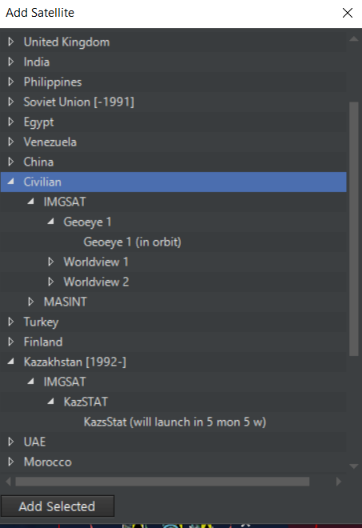
To Add a Satellite:
· Make sure the side you'd like to add them to are selected, and select Add Satellite from the editor drop-down, which will launch the Add Satellite dialog.
· To add a satellite to a scenario work through the nation, type, and model drill down lists and select the checkbox of the satellite you would like to add.
· Press the Add Satellite button when complete and it will appear on the GUI.
To Delete a Satellite:
Select the unit on the game map and press the D key to delete it.
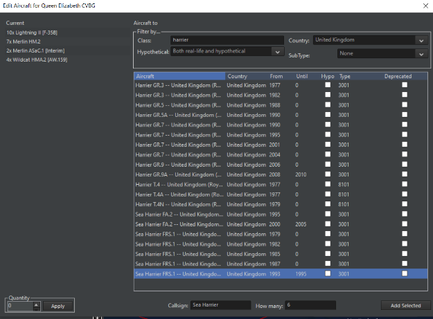
5.7.3 Edit Aircraft¶
This function allows you to add aircraft to any facility or group that can accommodate them by calling the Edit Aircraft dialog. The current inventory of aircraft hosted on a unit are displayed on the left and the edit aircraft functions and pick list are on the right.
How to add an aircraft to unit or group:
1. Select the unit, group, facility or air base you would like to add aircraft too and select Edit AC in the editor drop down which will launch the Edit AC dialog. Please consider the amount of storage the unit has and runway lengths. The game does filter as best as it can but there are hybrid units that don't always fit the mold.
2. As in the Add Unit dialog you can filter by: Class Name, Country, Aircraft Name, Aircraft Country, From Date and Unit Date.
3. Select the aircraft that would like by selecting on it in the unit listing.
4. Callsign: This is an editable text field that allows you to give nicknames to units. The callsigns can be purely descriptive (i.e. "40^th^ Fighter Regiment #1, #2, etc....) or more whimsical nicknames (i.e. a group of F-15Js going by the callsign Tengu #1, #2). To avoid confusion, no two "batches" of aircraft should have the same callsign, especially if they stage from different bases.
5. How Many: Enter a numeric value for the number of aircraft you would like to add.
6. Press the Add Selected button when complete.
Removing aircraft from a group or unit
1. Select the units you would like to remove from the current inventory list on the right. When you do so notice that Remove Selected button has appeared.
2. Set the number of units you would like to remove in the quantity field and click apply.
3. Click the Remove Selected buttons to remove the unit
5.7.3 Add/Removing a boat or submarine¶
1. Select the vessel you would like to host the boat or submarine and select Edit Docked Boats from the editor drop down which launches the edit docked boats dialog.
2. Use the type, class, country filters to display a list of possible units to host.
3. Select the unit you would like by selecting it in the pick list.
4. Add the number you wish to add in the How Many field.
5. Click the Add Selected button to add them. They should now appear in the current inventory list on the right.
To remove a boat or submarine:
1. Select the units you would like to remove from the current inventory list on the right. When you do so notice that Remove Selected button has appeared.
2. Set the number of units you would like to remove in the quantity field and click apply.
3. Click the Remove Selected buttons to remove the unit
5.7.4 Edit Docked Boats¶
This function allows editors to add boats or submersibles/UUV's to facilities or boats capable of hosting them. When launched the Edit Docked Boats dialog displays the current inventory of units already hosted on the vessel on the left and filters and a picklist to add boats on the right. This list is already filtered to display ships that fall within the correct size limitations to be hosted.

5.7.5 Remove All Units of the Side¶
Deletes all units for selected side. Be careful as there is no undo.
5.7.6 Edit Cargo¶
This function allows you to add cargo to a suitable unit.
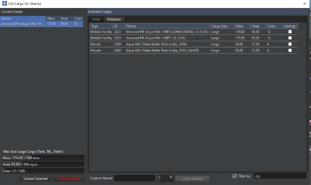
To load an appropriate unit with cargo:
1: Check the DB viewer to see if it contains a cargo capacity. Cargo is limited by mass, area, and crew-a giant LST or Il-76 can hold what a C-130 or small boat cannot. Edit Cargo can also be used on airbases.
2: Click on the unit, then go to Editor/Unit Actions/Edit Cargo
3: Select the mobile land unit to add in the "database", then go to the bottom left corner. Use the numeric counter to determine the quantity of the unit, then press "Load Selected".
4: Press "OK" in the bottom right corner to save the changes.
5: The "Cargo" button should appear on the unit sidebar. Clicking on it reveals how much mass, area, and crew the parent unit is holding, as how much spare capacity it has left.
6: Repeat as necessary.
7: For air cargo, make sure to both add suitable cargo to the airbase, and load specifically desired ones onto the individual aircraft if necessary.
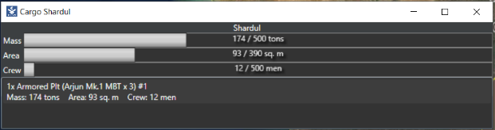
5.7.7 Other editor functions¶
Copy Unit: Many units of the same type and load-out may be placed by selecting an existing unit and pressing the hotkey "C" then clicking on the map to place a copy of the selected unit.
Clone Unit: As with "Copy Unit", only Shift+C is used to make a more exact "clone" of the unit in question.
Move Unit: To move a unit on the map, select the unit then press the hotkey "M" then click on the map the desired new location for the unit.
Rename Unit: Selecting this or pressing "R" after selecting a unit opens a dialog where the unit can be renamed.
Delete Unit: Select the unit or group and press the "DEL" key.
Set Fuel QTY and Airborne Time: Accessible for air units, this allows their fuel quality and time airborne (for the sake of things like quick turnaround calcs) at the start of the scenario to be set. An "automatically adjust fuel" option can be checked, which sets it at the optimum amount for the current altitude plus a 10% reserve.
Unit is auto-detectable: If checked, the unit can be seen without being in range of a sensor. This is generally off by default for mobile units and on for fixed units such as buildings.
Set Orientation: Allows you to adjust the unit facing. This is crucial for land units that have sensors with a limited arc like the radars on Patriot missile batteries. To use, simply move the slider bar to match your desired bearing.
Hold Position: This instructs a selected land unit to stop and stay in its current position.
Remove All Units (Of This Side): This deletes all units in the current side.
Remove All Contacts (Of This Side): This deletes all contacts visible by the current side. It does not remove the actual units, only the contacts.
Scenario Attachments: This allows overlays, Lua scripts, local videos/sound, or installation imports to be attached to a scenario or removed. The attachments can then be used via a "ScenEdit_UseAttachment" Lua script.
5.7.8 Publish Scenario to Steam Workshop (Steam only)¶
Obviously only accessible in the Steam version of COMMAND, this allows a scenario to be placed in the Steam Workshop. The process is very simple.
-Open the desired scenario in ScenEdit mode and ensure it's in a satisfactory condition.
-Select the "Publish Scenario to Steam Workshop" option from the editor drop-down menu.
From here, either an external preview image can be loaded via "Select Preview Image", or an in-game screenshot of the current camera can be used via "Use Screenshot". Once the preview image is determined, simply press Publish New Item and the scenario will be uploaded.
Other players with the Steam version can obtain the scenario by accessing the COMMAND Steam Workshop, locating the scenario, and pressing the subscribe button. A download/update will ensue, and the next time the Steam version of COMMAND is launched, the scenario will appear in a special tab on the scenario load dialog (see 2.2.1 Starting COMMAND on page 9) for easy access.
Published scenarios can be updated or changed by pressing the "Update Existing Workshop Item" button. The changed scenario will then be transmitted to all subscribers.
Package Scenario For Distribution: This bundles the scenario and all selected attachments together in one zip file for easy identification and loading by end users.
5.8 Import/Export Units¶
The import/export unit function is one of the most powerful tools in the game. It allows editors to save/export selected units and groups to a file and then import them into other scenarios at a later date or shared with other edits.
We have already prepopulated thousands of these files so that many of the airbases, air defense system or historical battlegroups might actually be there -- saving you time and effort.
Save selected units/groups to a file - Creating import files
1. Select a unit or drag select multiple units and groups you would like to save so they are highlighted and then select save selected units/groups to a file from the editor>import/export units drop-down. This will launch the Export units/groups to a file dialog.
2. Fill in the Name, Valid From, Valid Until and Notes text fields if you'd like.
3. Press the Save button which will launch the Save As dialog.
- Give the file a meaningful text name and when press the Save button. By default, it will be given an .inst file extension and saved to the import/export folder in your command directory.
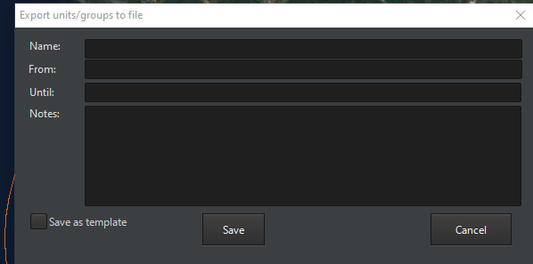
It is now possible in COMMAND to save a group of units as a template, this allows you to place several copies of it when importing it without sharing the same GUID numbers. This is very useful to create a baseline formation and then use the import feature to create several copies of the same formation.
Load units/Groups from File - Importing
Selecting load units/groups from file editor>import/export units drop-down will launch the Load Group(s) from File dialog. The left side is a hierarchal listing of all folders and files in the import/export directory. The right side displays the information you entered when you created the file and a list of all group members.
To add units to your scenario:
-
First find the unit or group you would like to add from the import listing on the left. You can open up the lists by clicking the + signs next to them to expose the files within folders.
-
You must be sure to match the import with the database you are using. We have marked all folders that contain cold war database files as CWDB and then their names. All others are DB3k files.
-
You must be wary of duplicates as well. It is likely that the creator of the 1967 SAM site File used it to build the 1973 SAM site file and if you add both you'll get a duplicate key error message. If for some reason this is unavoidable just click okay and the duplicate will be skipped.
-
Next mark the files you wish to import by selecting the open checkboxes next to them. If you'd like to select anything in a folder select the open checkbox next to it which will all select all folders and files under it.
-
To import click the Load selected installation button which will populate the units for the selected side on the UI.
-
To delete them you would have drag select and delete as you would a unit or group added any other way.
Lua Script Console: This opens a console where Lua scripts can be entered and run, either for the sake of testing or for the sake of scenario building (i.e. using "ScenEdit_Addunit" to put a specific unit in a very specific place). Different parts are color coded to enhance readability.
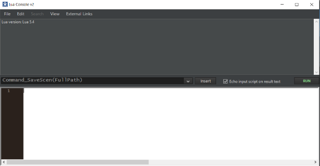
Existing .lua files can be loaded into the console using the file/open key.
5.9 Benchmark Mode¶
The benchmark mode allows you to test the performance of a scenario without having to run the main game GUI. This allows scenario editors a chance to see how their creation will run in general terms. To access this mode, select 'Benchmark' from the file menu and the main window will close and the following dialog box will appear.